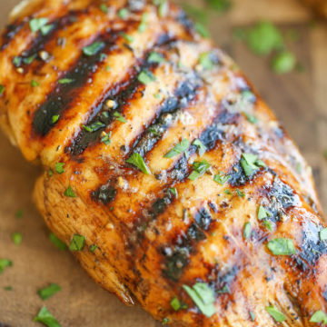

Grilled Chicken

Description
Grilled chicken can be a delicious and healthy meal that anyone can learn to make.
Not only is it a great dish that can be seasoned a variety of ways, but it is also
a very versitile food. The chicken can be used in salads, sandwiches, rice dishes,
fajitas, and many more dishes. This recipe will give you one way to season your
dish, but there are many things that can be made with the right ingredients and some
creativity.
Ingredients
- 2 lemons juiced (1/4 cup)
- 1/4 cup extra virgin olive oil
- 1 teaspoon dried basil
- 1 teaspoon dried oregano
- 1/2 teaspoon salt
- 1/2 teaspoon black pepper
- 3-4 garlic cloves crushed
- 4 boneless skinless chicken breast
Steps
- In a small bowl, whisk together lemon juice, olive oil, basil, oregano, salt, pepper, and garlic.
- Place chicken breasts into a large resealable plastic bag or shallow dish. Pour marinade over chicken.
- Marinate in the refrigerator for a minimum of 30 minutes, or up to 8 hours.
- Heat an outdoor grill over medium-high heat, about 400°F.
- Grill chicken for 5 to 7 minutes per side, or until internal temperature reaches 165°F.
- Remove from grill and let rest 5 minutes before serving.